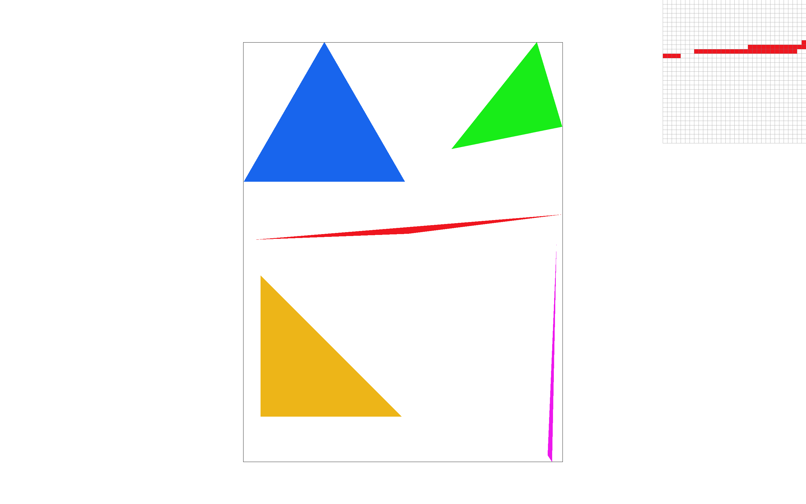
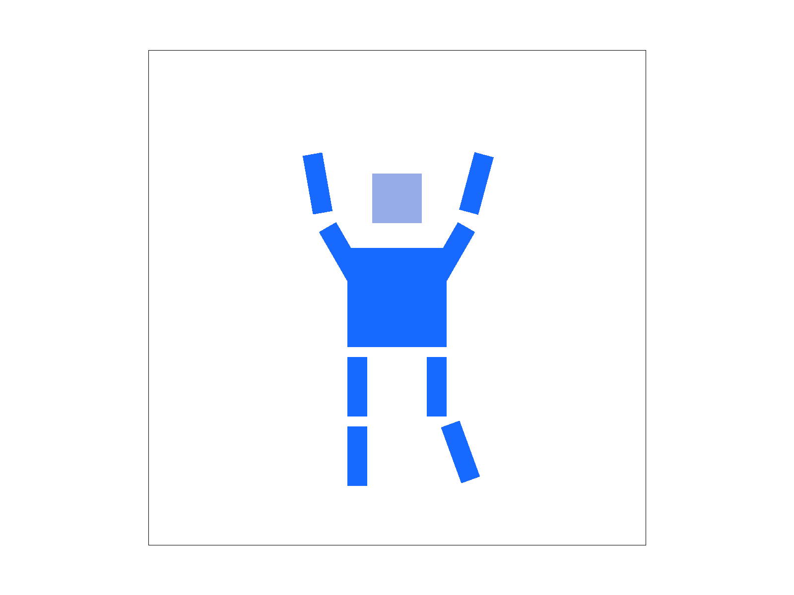
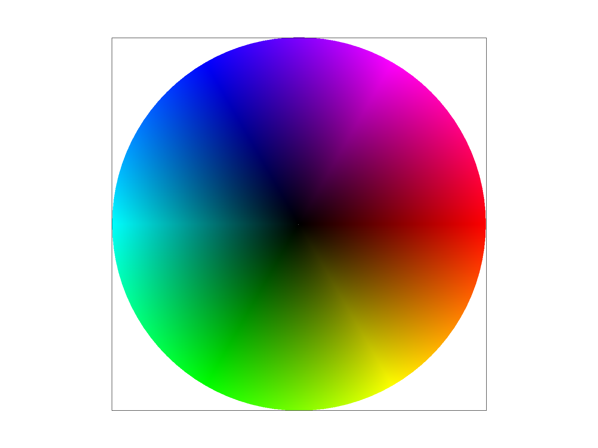
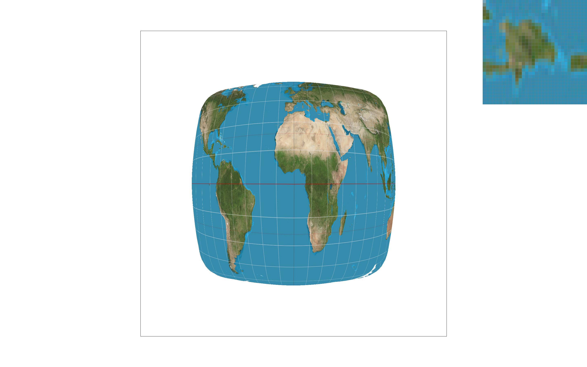

In this assignment, I implemented the basic components of a rasterization pipeline, including triangle rasterization, supersampling, geometric transformations, barycentric color interpolation, texture sampling, and mipmapping. Through these tasks, I gained a better understanding of how geometric shapes and textures are rendered as pixels on a screen.
Task 1: Drawing Single-Color Triangles
We rasterize a triangle by checking which pixels lie inside it. Given three vertices (P_0, P_1, P_2), we examine each pixel in the triangles bounding box. For each edge, we compute the cross product between the edge vector and the vector from the edges starting point to the pixel. The sign of the result tells us which side of the edge the pixel lies on. If the pixel is on the same side of all three edges, it is inside the triangle and is rasterized. We repeat this test for every pixel in the bounding box.
My implementation first computes the triangle bounding box. It then loops only over pixel coordinates within that box and evaluates each sample at the pixel center (x+0.5,y+0.5). If the point lies on the same side of all three edges, then the sample is inside the triangle, and the pixel is filled with the triangle's color. The implementation also works regardless of whether the triangle vertices are listed clockwise or counterclockwise.

basic/test4.svg at sample rate 1 with the pixel inspector focused on the beginning of the red triangle.
Task 2: Antialiasing by Supersampling
Task 3: Transforms
For Task 3, I implemented the transformation matrices for translation, scaling, and rotation. These transformations can be combined to move, resize, and rotate different parts of an SVG scene.
I created my own version of the robot by changing the transforms applied to different body parts. I changed the head rotation, adjusted the position and rotation of the left leg, and changed the arms so that the robot looks like it is cheering with both arms.
He stands with his right leg straight down while his left lower leg is angled, giving him a energetic stance.
This task helped me understand how to apply multiple transformations to individual objects and how their order influences the final position and orientation of the shapes.

My customized robot rendered using translation, rotation, and scaling transformations.
The SVG file used for this result is available here: my_robot.svg
Task 4: Barycentric coordinates
Barycentric coordinates describe the position of a point inside a triangle using three weights, one for each vertex. These weights always add up to 1. The closer a point is to a vertex, the greater its corresponding weight.
I used barycentric coordinates to interpolate colors across a triangle. Each vertex has its own color, and the color at any point inside the triangle is calculated as a weighted combination of the three vertex colors. This results in a smooth color gradient that blends red, green, and blue across the triangle.
As we can see in the circle below, we have a different colors at the circle vertices and want to interpolate smoothly. We use barycentric coordinates, which indicate how close a given point to each vertex. After getting three coefficients, alpha, beta, and gamma, we calculate the weighted sum of each vertex color to assign the current pixel color.

basic/test7.svg rendered at sampling rate 1 using barycentric color interpolation.
Task 5: "Pixel sampling" for texture mapping
Pixel sampling determines the color of a point on a textured surface by selecting or interpolating colors from a texture image. To implement texture mapping, I used barycentric coordinates to interpolate the UV coordinates of each sample inside a triangle.
Nearest sampling selects the closest texel, which can produce a pixelated appearance. Bilinear sampling interpolates the colors of the four surrounding texels using weighted averages, resulting in a smoother texture.
Nearest sampling at one sample per pixel.

Bilinear sampling at one sample per pixel.
Nearest sampling at 16 samples per pixel.
Bilinear sampling at 16 samples per pixel.
The nearest sampling at one sample per pixel is super pixelated in the magnified image. Bilinear sampling smooths this out even if we sample at one sample per pixel. A bilinear sampling at 16 samples per pixel is very smooth.
Bilinear sampling at 1 sample per pixel is a good example of where bilinear sampling clearly defeats nearest sampling at the same sample rate. However, for the 16 samples per pixel case, the difference is also visible, but not that much as for the 1 sample per pixel case.
Task 6: "Level Sampling" with mipmaps for texture mapping